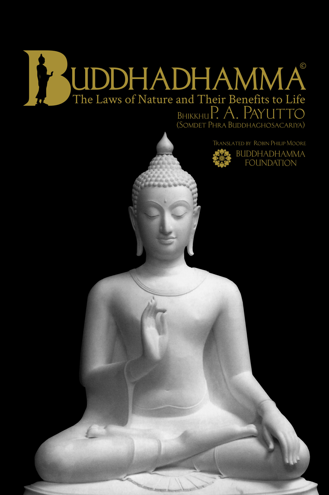

Buddhadhamma
The Laws of Nature and Their Benefits to Life
by Bhikkhu P. A. Payutto
buddhadhamma.github.ioLast updated on: 2021-09-10
Downloads

Copyright © Buddhadhamma Foundation 2021
This e-book is free to download from buddhadhamma.github.io. Distribution and commercial rights are reserved by the Buddhadhamma Foundation. If you wish to distribute this book from your website, please send your request to the Buddhadhamma Foundation.
Email: buddhadhammafoundationthai1987@gmail.com
Email: yongyutthanapura@gmail.com